WysiQ — Module Signals
Guide d'utilisation et cours de formation
Mesurer la dynamique, la rugosité et les cycles d'une série — 22 métriques expliquées avec exemples graphiques
Version de référence : build FIX35 · octobre 2026 · Langue : français
À qui s'adresse ce cours ? Aux utilisateurs de WysiQ qui savent déjà charger une table, tracer des séries et utiliser la palette Area. Aucune formation en traitement du signal n'est nécessaire : chaque métrique est introduite par un exemple visuel, puis par sa formule, puis par la façon de l'interpréter. Durée indicative : 3 h (lecture + exercices). Parcours conseillé : chapitres 1 à 4 (niveau Basic), puis 5 (Advanced), puis 6 (Expert) et les chapitres pratiques 7 à 10. |
0. Comment utiliser ce cours
Le module Signals ajoute à WysiQ une palette qui calcule, pour chaque série active, un ensemble de métriques de dynamique : combien la courbe bouge, à quelle vitesse, avec quelle régularité, et selon quels cycles. Ce document sert à la fois de mode d'emploi (chapitre 2), de référence (une fiche par métrique, chapitres 4 à 6) et de support de formation (exercices guidés, cas pratique et quiz corrigé).
Organisation
| Chapitre | Contenu | Niveau |
| 1 | Pourquoi Signals : ce que les statistiques classiques ne voient pas | Tous |
| 2 | Prise en main de la palette Signal, pas à pas | Tous |
| 3 | Notations et règles de calcul communes à toutes les métriques | Tous |
| 4 | Métriques Basic : nb, trans, TVAR, NTVAR, SIGN_CHG, PEAKS, VALLEYS, OSC_PERIOD | Basic |
| 5 | Métriques Advanced : TVAR2, NTVAR2, SPIKE_RATIO, RAMP_CONC, ZERO_X, pentes, AUTOCORR_LAG1, SMOOTHNESS | Advanced |
| 6 | Métriques Expert : HF_ENERGY et les quatre scalaires FFT | Expert |
| 7 | Signal → Série : transformer une métrique en courbe | Advanced |
| 8 | Lire les métriques ensemble : grille de diagnostic | Advanced |
| 9 | Cas pratique : le nucléaire avec et sans solaire | Tous |
| 10 | Exercices et corrigés | Tous |
| 11 | Aide-mémoire des 22 métriques | Tous |
Conventions du document
• Les noms des métriques sont écrits comme dans WysiQ, par exemple TVAR ou FFT_PERIOD1.
• Les libellés d'interface sont en anglais, comme dans l'application : ReCalc, Use Area, Signals...
• Les niveaux Basic, Advanced et Expert reprennent l'échelle affichée dans Settings > Signal (colonne Level).
• Tous les nombres figurant dans les graphiques ont été calculés avec le moteur de calcul réel de WysiQ (xiquery/signal/metrics.py) : vous obtiendrez les mêmes valeurs en reproduisant les exemples.
Encadrés Bleu : astuce. Orange : piège à éviter. Vert : à retenir. Violet : exercice. |
1. Pourquoi Signals ?
Les palettes Area et Stats répondent à la question « combien ? » : moyenne (AVG), somme (SUM), écart entre début et fin (DELTA), étendue (RANGE). Elles ne disent rien sur la façon dont la série évolue entre deux points. Deux courbes peuvent avoir exactement la même moyenne et la même amplitude et pourtant raconter deux histoires complètement différentes.
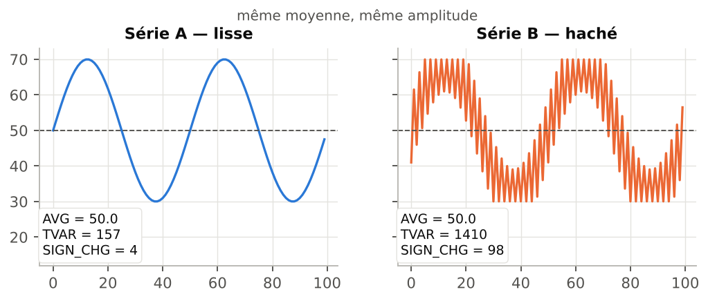
Figure 1 — Même moyenne (50) et même étendue (30 → 70), mais une dynamique très différente.
Sur la figure 1, AVG vaut 50 pour les deux séries. Pourtant la série B parcourt au total 1410 unités contre 157 pour la série A (TVAR), et change de direction 98 fois au lieu de 4 (SIGN_CHG). C'est exactement ce que mesure la palette Signal : les mouvements internes d'une série sur une plage X.
Questions auxquelles Signals répond
| Question métier | Métriques à regarder |
| La série est-elle plus agitée sur cette période que sur celle-là ? | NTVAR, SMOOTHNESS, HF_ENERGY |
| Les mouvements sont-ils réguliers ou faits de quelques grands sauts ? | SPIKE_RATIO, RAMP_CONC, ABS_SLOPE_MAX |
| Combien de fois la courbe monte puis redescend ? | PEAKS, VALLEYS, SIGN_CHG |
| Y a-t-il un cycle, et de quelle durée ? | FFT_PERIOD1, OSC_PERIOD, FFT_POWER_LF |
| La série est-elle prévisible d'un point au suivant ? | AUTOCORR_LAG1 |
| Un solde change-t-il souvent de signe ? | ZERO_X |
Exemple WysiQ typique Comparer la variabilité de la production nucléaire pendant les périodes avec beaucoup de solaire et sans solaire. La moyenne baisse un peu, mais surtout la courbe devient « pilotée » : modulations quotidiennes, rampes, creux de midi. Ce cas complet est traité au chapitre 9. |
2. Prise en main de la palette Signal
2.1 Ouvrir la palette
1. Ouvrez une query et tracez au moins une série dans la fenêtre graphique.
2. Cliquez le bouton Signals de la barre de boutons du graphe (à côté de Table, Area et Scenario). Depuis la télécommande des palettes, le raccourci Si ouvre et ferme la même palette.
3. La fenêtre « Signal — <nom de la query> » s'ouvre. Sa position, sa taille et son état (visible ou non) sont enregistrés avec la query et restaurés à la réouverture.
2.2 Quelles séries sont analysées ?
La palette analyse toutes les séries cochées dans la colonne A de la palette Séries : séries de table, Metrics, séries virtuelles (alias, combo, scénario commité), et séries A qui sont aussi tracées en G. Le coefficient éventuel (coeff) est appliqué : une série multipliée par 0,001 apparaît sous le nom Série*0.001.
Aucune série ? Si l'en-tête du tableau affiche « Metric — no A-series active (check A column) », aucune série n'est cochée en A. Cochez la colonne A des séries à analyser, puis cliquez ReCalc. |
2.3 Choisir la plage X
Les métriques sont calculées uniquement sur les points dont X est compris entre Xmin et Xmax. Deux modes :
| Mode | Comportement |
| Use Area coché (par défaut) | Si un rectangle Area valide existe sur le graphe, Xmin/Xmax sont repris du rectangle. Sans rectangle valide, Signal affiche les bornes X visibles et analyse tous les points. |
| Use Area décoché (manuel) | Xmin et Xmax deviennent éditables. Saisissez les bornes, puis validez avec Entrée (ou en quittant le champ) : le calcul est relancé. |
• Les dates de Xmin/Xmax suivent le format défini dans Params > Core > Date format (tables).
• X peut être le temps, une série brute, une Metric ou une série calculée : la palette suit l'axe X du graphe.
• Les champs ne recalculent pas à chaque frappe : seul Entrée, la sortie du champ ou ReCalc déclenchent le calcul.
2.4 Le seuil eps
Le champ eps définit une amplitude en dessous de laquelle une variation est considérée comme du bruit. Il agit sur les métriques de comptage : SIGN_CHG, PEAKS, VALLEYS, OSC_PERIOD (via les extrêmes) et ZERO_X. Il ne modifie pas TVAR, NTVAR, les pentes ni la FFT. Valeur par défaut : 0 (aucun filtrage). Son usage est détaillé dans la fiche SIGN_CHG (§ 4.5).
2.5 Anatomie de la palette

Figure 2 — Schéma de la palette Signal (vue normale : une ligne par métrique, une colonne par série).
| N° | Élément | Rôle |
| 1 | Use Area | Synchronise Xmin/Xmax avec le rectangle Area (§ 2.3). |
| 2 | Xmin / Xmax | Bornes de la plage analysée ; éditables quand Use Area est décoché. |
| 3 | eps | Seuil anti-bruit des métriques de comptage (§ 2.4). |
| 4 | ReCalc | Recalcule toutes les métriques et relit les bornes X. |
| 5 | Transpose | Bascule entre vue normale (métriques en lignes) et vue transposée (séries en lignes, métriques en colonnes). |
| 6 | Signals... | Ouvre directement l'onglet Settings > Signal (choix des colonnes, fenêtre HF). |
| 7 | → AI | Envoie le tableau calculé dans le AI Feed (§ 2.8). |
| 8 | > Serie | Active le mode d'envoi pour fabriquer des séries vectorielles (chapitre 7). |
| 9 | Post-it ▾ | Post-it : copie jaune figée du tableau. Hide/Show : masque ou réaffiche les post-it. |
| 10 | ? | Ouvre l'aide intégrée de la palette. |
| 11 | Colonne S | ● = la métrique possède une version vectorielle ; ✓ vert = déjà envoyée pendant la session. |
| 12 | En-têtes de séries | Un clic trie le tableau ; en mode > Serie, un clic sélectionne la série. |
| 13 | Signals Description | Nom de la métrique suivi de sa description courte. |
2.6 Choisir les métriques affichées : Settings > Signal
Le bouton Signals... ouvre l'onglet Signal de la fenêtre Settings. On y trouve le catalogue des 22 métriques avec cinq colonnes : Show (✓ si affichée), Signal (nom), Level (Basic, Advanced, Expert), Formula et Meaning.
• Cliquez une ligne pour afficher ou masquer la colonne correspondante dans la palette.
• Cliquez l'en-tête Signal (n/22) all on/off pour tout afficher ou tout masquer.
• Le champ HF moving average window fixe la fenêtre de moyenne mobile utilisée par HF_ENERGY et par toutes les conversions glissantes de Signal → Série. Défaut : 7. Les valeurs paires sont arrondies à l'impair inférieur (8 → 7) pour garder une fenêtre centrée. Plage acceptée : 3 à 999.
Conseil de formation Pour débuter, n'affichez que les métriques Basic. Ajoutez les niveaux Advanced puis Expert au fil des chapitres : le tableau reste lisible et chaque nouvelle colonne a un sens. |
2.7 Lire, trier, transposer et copier
• Trier : cliquez l'en-tête d'une série (vue normale) ou d'une métrique (vue transposée).
• Transposer : la vue transposée est plus pratique quand il y a beaucoup de séries et peu de métriques.
• Copier : sélectionnez des lignes puis CTRL+C ; l'en-tête des colonnes est copié avec les valeurs (collage direct dans un tableur).
• Figer : Post-it crée une copie jaune du tableau. Changez la plage X, recalculez, et comparez l'ancien et le nouveau tableau côte à côte.
• Le nombre de décimales suit le réglage de décimales de WysiQ ; la largeur des colonnes est mémorisée.
2.8 Envoyer les résultats à l'IA : → AI
Après un calcul, → AI dépose le tableau des signaux dans le AI Feed de la query. Dans le AI Center, la question prédéfinie Interpréter les signaux demande à l'assistant d'identifier les signaux les plus forts, d'expliquer pics, ruptures, cycles ou anomalies, de distinguer artefacts de données et événements significatifs, et de proposer les prochaines vérifications. Si rien n'a été calculé, un message invite à lancer ReCalc d'abord.
2.9 Exercice guidé n° 1 — première mesure
Objectif : comparer deux semaines d'une même série • Tracez une série horaire (par exemple une consommation) et cochez-la en A. • Ouvrez la palette Signals. Laissez Use Area coché. • Dans la palette Area, dessinez un rectangle sur une première semaine. Cliquez ReCalc. • Choisissez Post-it pour figer le résultat. • Déplacez le rectangle sur une seconde semaine, puis ReCalc. • Comparez NTVAR et PEAKS entre le post-it et le tableau courant. Quelle semaine est la plus agitée ? |
3. Notations et règles de calcul
Toutes les métriques partagent la même préparation des données. La connaître évite la plupart des erreurs d'interprétation.
3.1 Points valides et transitions
Seuls les points où X et Y sont des nombres finis sont conservés ; les valeurs manquantes (NaN) sont retirées avant tout calcul. Les points restants sont notés y0, y1, …, yn, et les différences successives dy[i] = y[i+1] − y[i].
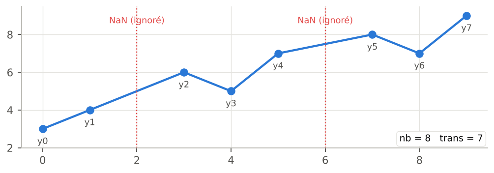
Figure 3 — Deux valeurs manquantes sont ignorées : nb = 8 points valides, trans = 7 transitions.
Les trous sont « recousus » Quand un NaN est retiré, le point précédent et le point suivant deviennent consécutifs : la transition franchit le trou. Sur des données avec de longues coupures, cela crée un saut artificiel qui gonfle TVAR2, SPIKE_RATIO ou ABS_SLOPE_MAX. Choisissez une plage X sans grosse lacune, ou comblez les trous en amont. |
3.2 L'unité de X : attention aux dates
Quand l'axe X est une date, WysiQ le convertit en nombre de jours (convention Matplotlib). Toutes les métriques qui dépendent de X s'expriment alors en jours :
| Métrique | Unité si X est une date | Exemple |
| ABS_SLOPE_AVG, ABS_SLOPE_MAX | unité de Y par jour | MW/jour |
| OSC_PERIOD, FFT_PERIOD1 | jours | 1,0 = 24 h ; 0,25 = 6 h ; 7,0 = une semaine |
| FFT_FREQ1 | cycles par jour | 1,0 = un cycle par jour |
Dans les exemples de ce cours, X est souvent exprimé en heures ou en indices pour garder des nombres simples : pensez à diviser par 24 pour retrouver la valeur affichée par WysiQ sur un axe date horaire.
3.3 Métriques avec ou sans unité
Certaines métriques héritent de l'unité de Y (TVAR, NTVAR, pentes…) : elles ne se comparent qu'entre séries de même unité et même échelle. D'autres sont adimensionnelles (SPIKE_RATIO, RAMP_CONC, AUTOCORR_LAG1, FFT_POWER_HF/LF) ou sont des comptages (PEAKS, SIGN_CHG…) : elles se comparent entre n'importe quelles séries. L'aide-mémoire du chapitre 11 indique cette propriété pour chaque métrique.
3.4 Valeurs nan
Une cellule « nan » signifie que la métrique n'est pas définie pour la plage choisie : moins de 2 points (aucune transition), moins de 3 points (autocorrélation), moins de 5 points (HF_ENERGY), moins de 8 points (FFT), série constante (autocorrélation), ou moins de deux extrêmes (OSC_PERIOD). Ce n'est pas une erreur : élargissez la plage X.
4. Les métriques de niveau Basic
Les huit métriques Basic reposent sur une seule idée mécanique chacune et se lisent d'un coup d'œil. Elles suffisent pour la majorité des comparaisons courantes.
4.1 nb — nombre de points valides
| Niveau | Formule | Unité | Signal → Série |
| Basic | nb = len(y) | points | non |
Nombre de points effectivement utilisés après suppression des valeurs manquantes et filtrage sur [Xmin, Xmax]. C'est la première colonne à vérifier : elle confirme que la plage choisie est la bonne et permet de repérer une série incomplète (nb plus petit que pour les autres séries sur la même plage).
• Une semaine horaire complète donne nb = 168 ; une journée au pas quart-horaire, nb = 96.
• Si nb diffère entre deux séries sur la même plage, l'une d'elles a des trous : les métriques en somme (TVAR, TVAR2, HF_ENERGY) ne sont alors pas comparables directement.
4.2 trans — nombre de transitions
| Niveau | Formule | Unité | Signal → Série |
| Basic | trans = len(dy) = nb − 1 | transitions | non |
Nombre de pas entre points consécutifs. Il sert de dénominateur aux versions normalisées NTVAR et NTVAR2. S'il vaut 0 (un seul point), toutes les métriques de mouvement sont nan.
4.3 TVAR — variation totale
| Niveau | Formule | Unité | Signal → Série |
| Basic | TVAR = Σ |dy[i]| | unité de Y | oui : Local variance |
TVAR additionne la valeur absolue de chaque mouvement : les hausses et les baisses ne se compensent pas. C'est la « distance verticale parcourue » par la courbe, comme le compteur kilométrique d'une voiture qui ferait des allers-retours.
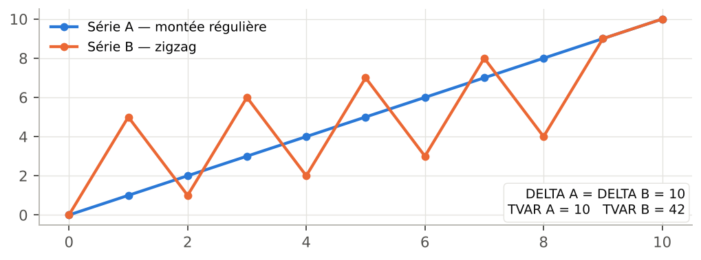
Figure 4 — Même DELTA (0 → 10) mais TVAR = 10 pour la montée régulière et 42 pour le zigzag.
Comment lire TVAR
• TVAR = |DELTA| : la série a évolué de façon monotone (toujours dans le même sens).
• TVAR ≫ |DELTA| : la série a fait beaucoup d'allers-retours. Le rapport TVAR / |DELTA| mesure ce « surcroît de chemin ».
• TVAR dépend du nombre de points : pour comparer deux plages de longueurs différentes, utilisez NTVAR.
Usage WysiQ Sur une production pilotable, TVAR sur une journée approche le volume cumulé de modulations (en MW) effectuées par le parc. |
4.4 NTVAR — TVAR normalisé
| Niveau | Formule | Unité | Signal → Série |
| Basic | NTVAR = TVAR / trans | unité de Y par pas | oui : Local variance |
Mouvement absolu moyen par transition. NTVAR permet de comparer des plages de longueurs différentes, à condition que le pas d'échantillonnage soit le même.
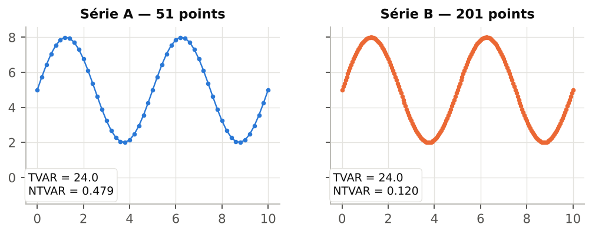
Figure 5 — Même courbe échantillonnée avec 51 puis 201 points : TVAR reste ≈ 24, mais NTVAR passe de 0,479 à 0,120.
Piège : le pas d'échantillonnage Sur une courbe lisse, plus on a de points, plus chaque pas est petit : NTVAR baisse mécaniquement. Ne comparez NTVAR qu'entre séries au même pas (horaire contre horaire). Pour un indicateur indépendant du pas, utilisez ABS_SLOPE_AVG (§ 5.6), qui divise par dx. |
4.5 SIGN_CHG — changements de sens
| Niveau | Formule | Unité | Signal → Série |
| Basic | SIGN_CHG = count(sign(dy[i]) ≠ sign(dy[i−1])) après filtrage eps |
nombre | non |
Compte combien de fois la pente change de signe, c'est-à-dire combien de fois la courbe passe de « monte » à « descend » ou l'inverse. Les pas nuls sont ignorés ; les pas dont l'amplitude est inférieure à eps aussi.

Figure 6 — Un bruit de ±0,15 ajoute des changements de sens parasites ; eps = 0,5 les élimine (SIGN_CHG : 8 → 4).
Choisir eps
1. Zoomez sur une portion « calme » de la série et estimez l'amplitude typique du bruit d'un point au suivant.
2. Saisissez dans eps une valeur de 2 à 3 fois cette amplitude, puis Entrée.
3. Vérifiez que SIGN_CHG, PEAKS et VALLEYS correspondent maintenant aux oscillations visibles à l'œil.
À retenir eps s'exprime dans l'unité de Y : une valeur adaptée à une série en MW ne convient pas à une série en GW. Sans eps, les comptages mesurent surtout le bruit. |
4.6 PEAKS et VALLEYS — pics et creux locaux
| Niveau | Formule | Unité | Signal → Série |
| Basic | PEAKS : pente + puis − VALLEYS : pente − puis + |
nombre | non |
PEAKS compte les maxima locaux (la courbe monte puis redescend), VALLEYS les minima locaux. Les paliers (pente nulle ou inférieure à eps) sont « traversés » : un plateau entre une montée et une descente compte pour un seul pic.
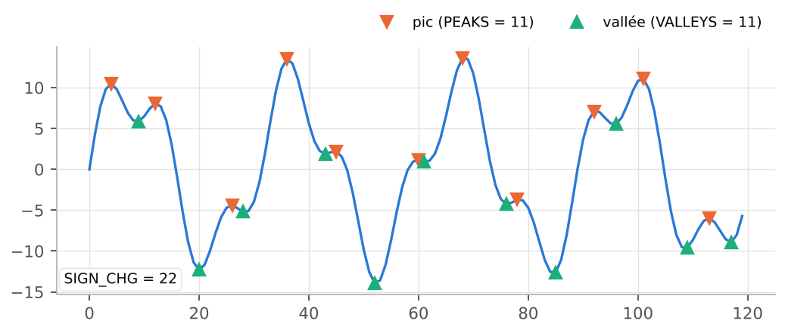
Figure 7 — Un signal à deux composantes : PEAKS = 11, VALLEYS = 11, SIGN_CHG = 22.
• En l'absence de eps, on a presque toujours SIGN_CHG ≈ PEAKS + VALLEYS.
• |PEAKS − VALLEYS| ≤ 1 : les pics et les creux alternent forcément.
• Sur une journée de consommation, PEAKS = 2 traduit le classique double pointe matin/soir.
4.7 OSC_PERIOD — durée moyenne entre extrêmes
| Niveau | Formule | Unité | Signal → Série |
| Basic | OSC_PERIOD = moyenne des distances X entre extrêmes successifs |
unité de X | non |
OSC_PERIOD repère tous les pics et creux (avec le même filtrage eps), puis calcule la distance moyenne, en X, entre deux extrêmes consécutifs.
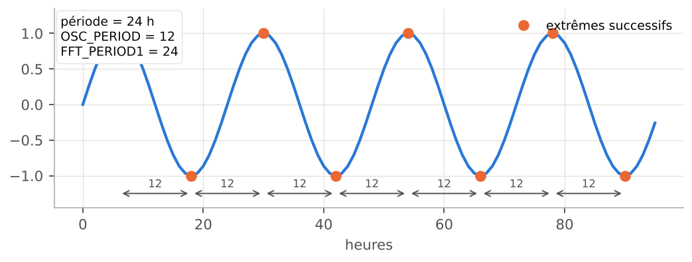
Figure 8 — Sinusoïde de période 24 h : OSC_PERIOD = 12, FFT_PERIOD1 = 24.
Demi-période La distance mesurée va d'un pic au creux suivant : pour une oscillation régulière, OSC_PERIOD vaut donc la moitié de la période du cycle. Multipliez par 2 pour la comparer à FFT_PERIOD1. Si 2 × OSC_PERIOD ≈ FFT_PERIOD1, le cycle détecté est propre ; si OSC_PERIOD est beaucoup plus petit, des micro-oscillations (bruit) s'ajoutent : augmentez eps. |
OSC_PERIOD vaut nan s'il y a moins de deux extrêmes dans la plage (série monotone).
5. Les métriques de niveau Advanced
Les métriques Advanced demandent de garder plusieurs notions en tête en même temps : l'énergie quadratique, la concentration des mouvements, la pente, l'inertie. Elles distinguent des séries que les métriques Basic jugent semblables.
5.1 TVAR2 — énergie dynamique
| Niveau | Formule | Unité | Signal → Série |
| Advanced | TVAR2 = Σ dy[i]² | unité de Y au carré | oui : Local variance |
TVAR2 élève chaque mouvement au carré avant de sommer : un grand saut pèse beaucoup plus que plusieurs petits pas de même total. C'est la métrique qui distingue un mouvement réparti d'un mouvement concentré.
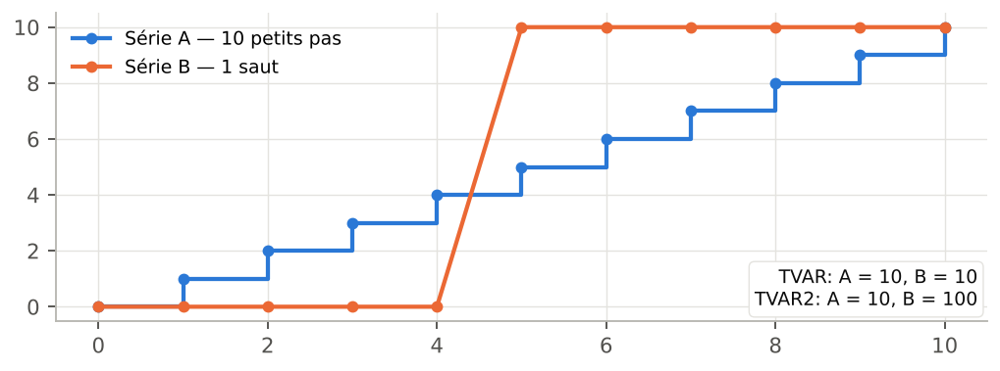
Figure 9 — TVAR identique (10) mais TVAR2 = 10 pour 10 pas de 1 et 100 pour un saut de 10.
• TVAR2 réagit fortement aux rampes et aux pics.
• Son unité est le carré de celle de Y : la valeur brute est peu parlante ; utilisez-la surtout en comparaison, ou via SPIKE_RATIO et RAMP_CONC.
5.2 NTVAR2 — énergie moyenne par transition
| Niveau | Formule | Unité | Signal → Série |
| Advanced | NTVAR2 = TVAR2 / trans | unité de Y au carré | oui : Local variance |
Version normalisée de TVAR2, comparable entre plages de longueurs différentes (au même pas). Sa racine carrée, √NTVAR2, est l'amplitude quadratique moyenne d'un pas, dans l'unité de Y.
5.3 SPIKE_RATIO — dominance des pics
| Niveau | Formule | Unité | Signal → Série |
| Advanced | SPIKE_RATIO = NTVAR2 / NTVAR² | sans unité, ≥ 1 | non |
SPIKE_RATIO compare l'énergie quadratique moyenne au carré du mouvement moyen. Il vaut 1 quand tous les pas ont la même taille et augmente quand quelques grands mouvements dominent. Comme il est sans unité, il se compare entre séries de toute échelle (MW, °C, €…).
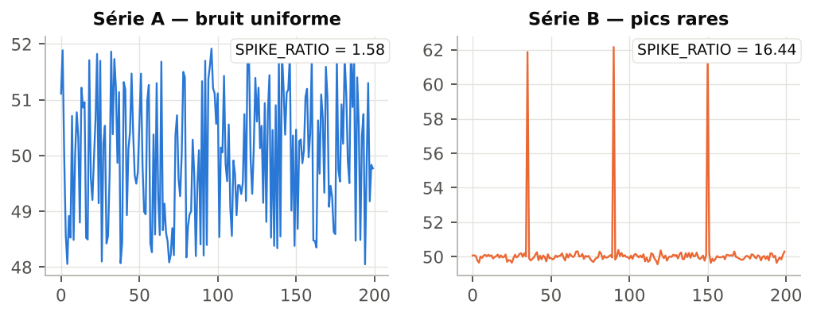
Figure 10 — Bruit uniforme : SPIKE_RATIO = 1,58 ; trois pics isolés sur un fond calme : 16,44.
| SPIKE_RATIO | Lecture |
| ≈ 1 | Mouvements de taille homogène (marches régulières, alternance pure). |
| 1,2 – 2 | Bruit ordinaire ou oscillation douce : quelques pas plus grands que d'autres. |
| 2 – 5 | Rampes ou événements marqués au milieu de mouvements modérés. |
| > 5 | Quelques sauts ou pics rares concentrent l'essentiel du mouvement. |
Usage WysiQ Un SPIKE_RATIO élevé sur des prix spot signale des épisodes de pics ; sur un capteur, il signale souvent des valeurs aberrantes à vérifier. |
5.4 RAMP_CONC — concentration des rampes
| Niveau | Formule | Unité | Signal → Série |
| Advanced | RAMP_CONC = √TVAR2 / TVAR | sans unité, entre 1/√trans et 1 | non |
RAMP_CONC mesure la part du mouvement total portée par quelques grands mouvements. Il vaut 1 quand un seul pas concentre tout le mouvement et descend vers 1/√trans quand tous les pas sont égaux (mouvement complètement diffus).
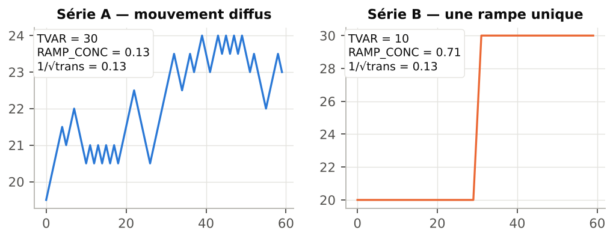
Figure 11 — Petits pas réguliers : RAMP_CONC = 0,13 (= 1/√trans) ; une rampe unique : 0,71.
Comparer à la borne basse La borne basse 1/√trans dépend du nombre de points (0,08 pour 168 points, 0,33 pour 10 points). Pour comparer deux plages de longueurs différentes, regardez plutôt SPIKE_RATIO, ou comparez RAMP_CONC × √trans. SPIKE_RATIO et RAMP_CONC sont complémentaires : le premier dit « des pics dominent-ils ? », le second « combien d'événements portent le mouvement ? ». |
5.5 ZERO_X — passages par zéro
| Niveau | Formule | Unité | Signal → Série |
| Advanced | ZERO_X = count(sign(y[i]) ≠ sign(y[i−1])) | nombre | non |
Compte combien de fois la valeur (et non la pente) change de signe. Les valeurs dont |y| < eps sont traitées comme nulles et ignorées. ZERO_X n'a de sens que pour une série qui oscille autour de 0 : solde import/export, écart à une prévision, prix négatifs, dérivée d'une autre série.
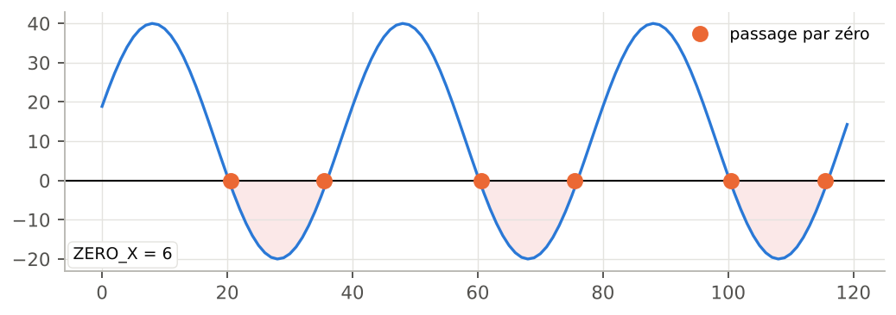
Figure 12 — ZERO_X = 6 : la série passe six fois de positif à négatif ou l'inverse.
Astuce Pour compter les passages autour de la moyenne plutôt que de 0, créez une Metric centrée (série − AVG) et analysez-la. |
5.6 ABS_SLOPE_AVG et ABS_SLOPE_MAX — pentes absolues
| Niveau | Formule | Unité | Signal → Série |
| Advanced | ABS_SLOPE_AVG = mean(|dy/dx|) ABS_SLOPE_MAX = max(|dy/dx|) |
unité de Y par unité de X | oui : Derivative, Acceleration |
La pente locale |dy/dx| divise chaque mouvement par l'écart en X correspondant. ABS_SLOPE_AVG donne la vitesse moyenne de variation, ABS_SLOPE_MAX la rampe la plus raide de la plage. Contrairement à NTVAR, la pente ne dépend pas du pas d'échantillonnage et reste juste quand le pas X est irrégulier.
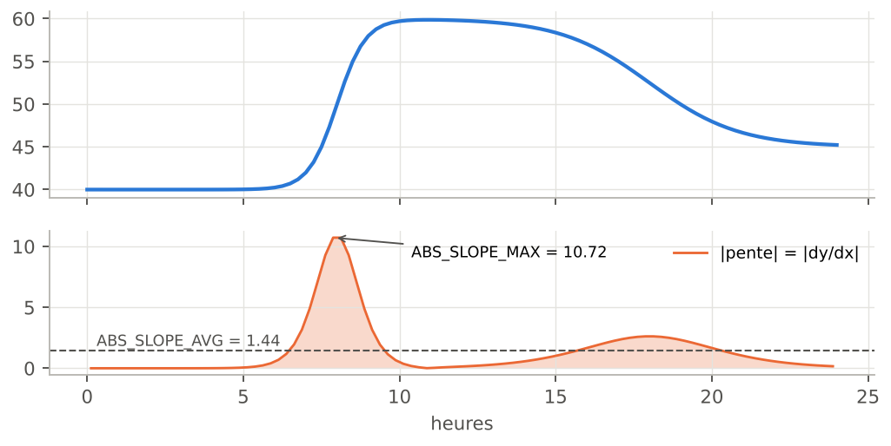
Figure 13 — En haut la série, en bas sa pente absolue : moyenne 1,44, maximum 10,72 (Y par heure).
• Si X est une date, la pente est en unité de Y par jour : une rampe de 1 000 MW en une heure s'affiche 24 000 MW/jour.
• Si X est régulier avec un pas de 1, ABS_SLOPE_AVG = NTVAR (comparez les deux colonnes pour vérifier la régularité du pas).
• ABS_SLOPE_MAX est très sensible à un seul point aberrant : vérifiez-le avec SPIKE_RATIO.
5.7 AUTOCORR_LAG1 — inertie d'un point au suivant
| Niveau | Formule | Unité | Signal → Série |
| Advanced | AUTOCORR_LAG1 = corr(y[:-1], y[1:]) | sans unité, de −1 à +1 | oui : Rolling correlation |
Corrélation entre la série et elle-même décalée d'un point. Elle répond à la question : « connaître la valeur actuelle permet-il de prévoir la suivante ? ».
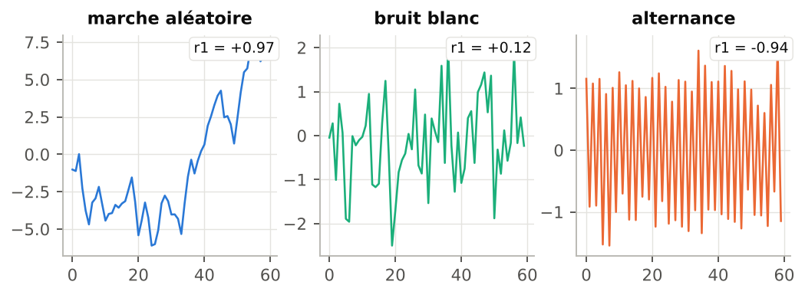
Figure 14 — Marche aléatoire r1 = 0,97, bruit blanc r1 = 0,12, alternance r1 = -0,94.
| Valeur | Lecture |
| proche de +1 | Signal persistant, inertiel : chaque point ressemble au précédent (températures, consommation lissée, niveaux). |
| proche de 0 | Bruit blanc : le point suivant est imprévisible à partir du point courant. |
| négative | Alternance : une hausse est suivie d'une baisse (oscillation au pas d'échantillonnage, correction systématique). |
Tendance et inertie Une tendance forte (une rampe) donne aussi une autocorrélation proche de 1, même si le signal est très bruité autour de la tendance. Pour isoler le bruit, analysez une série dé-tendancée ou regardez HF_ENERGY et FFT_POWER_HF. Sur une série constante, l'autocorrélation n'est pas définie (nan). |
5.8 SMOOTHNESS — score de régularité
| Niveau | Formule | Unité | Signal → Série |
| Advanced | SMOOTHNESS = 1 / (1 + NTVAR) | sans unité, entre 0 et 1 | oui : Local fractality |
Score inverse de rugosité : 1 pour une série parfaitement plate, proche de 0 pour une série très agitée. Il est pratique pour classer rapidement des séries de même unité du plus lisse au plus rugueux.
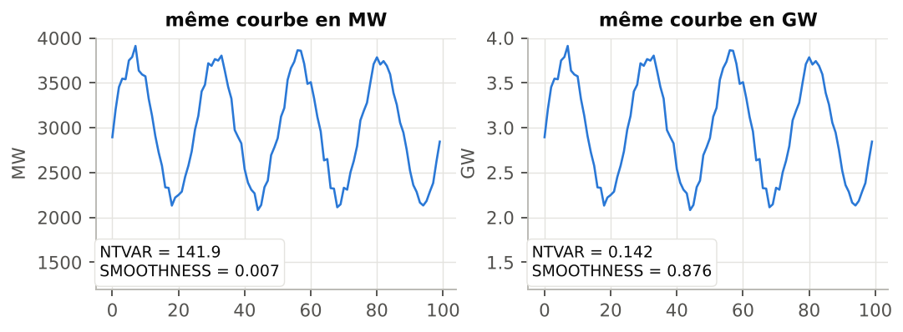
Figure 15 — La même courbe en MW (SMOOTHNESS = 0,007) et en GW (0,876).
SMOOTHNESS dépend de l'unité Bien que bornée entre 0 et 1, SMOOTHNESS est calculée à partir de NTVAR, qui porte l'unité de Y. Convertir des MW en GW change complètement le score. Ne comparez SMOOTHNESS qu'entre séries de même unité et de même échelle ; pour un classement inter-unités, utilisez AUTOCORR_LAG1 ou FFT_POWER_HF. |
6. Les métriques de niveau Expert
Les métriques Expert s'adressent aux utilisateurs qui veulent comprendre ce qu'il y a derrière les mathématiques. Elles reposent sur deux outils : le lissage par moyenne mobile (HF_ENERGY) et la transformée de Fourier rapide (les quatre métriques FFT).
6.1 HF_ENERGY — énergie haute fréquence
| Niveau | Formule | Unité | Signal → Série |
| Expert | smooth = moyenne mobile(y, w) HF_ENERGY = Σ (y − smooth)² |
unité de Y au carré | oui : Local energy |
On lisse la série par une moyenne mobile centrée de w points (paramètre HF moving average window, défaut 7), puis on additionne le carré des écarts entre la série et sa version lissée. Ce qui reste après lissage, ce sont les mouvements rapides : bruit, oscillations courtes, pilotage à court terme.
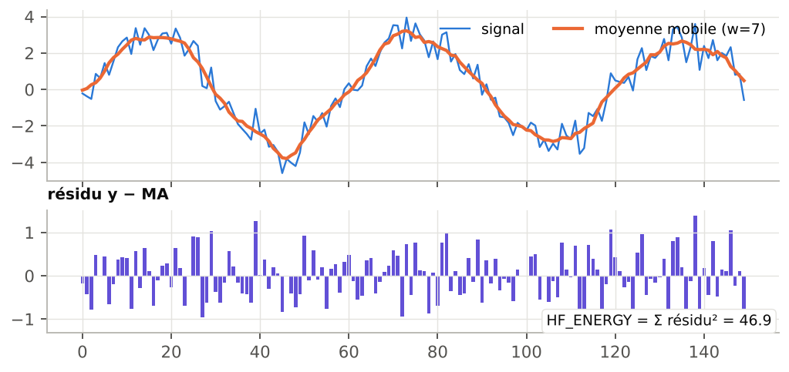
Figure 16 — En haut le signal et sa moyenne mobile ; en bas les résidus, dont la somme des carrés vaut 46,9. Même signal moins bruité : 3,6.
Choisir la fenêtre w
• w doit être plus court que les variations que vous considérez comme « signal » : tout ce qui varie plus vite que w points est compté comme haute fréquence.
• Données horaires : w = 5 à 7 isole les variations infra-journalières rapides ; w = 25 rangerait aussi le cycle journalier dans la HF.
• Utilisez des valeurs impaires : une valeur paire est ramenée à l'impair inférieur.
Comparer à échelle égale HF_ENERGY est une somme : elle dépend du nombre de points et de l'unité de Y. Comparez des plages de même longueur et des séries de même unité. Note de version (FIX35) : le lissage aux bords de la plage est calculé en complétant par des zéros. Sur une série dont le niveau est loin de 0 (par exemple 40 000 MW), les premiers et derniers points produisent des résidus énormes qui dominent la somme. En attendant une correction, analysez une série centrée (Metric série − AVG) ou utilisez la conversion Local energy (chapitre 7), qui n'a pas ce défaut. |
6.2 Comprendre la FFT en une page
La transformée de Fourier décompose une série en une somme de sinusoïdes de différentes fréquences. Le résultat, le spectre, indique quelle énergie porte chaque fréquence. Lire un spectre brut demande une formation spécialisée : WysiQ en extrait donc quatre nombres directement utiles.
• Rééchantillonnage : la série est d'abord interpolée linéairement sur une grille X régulière de même nombre de points. Les métriques fonctionnent donc aussi avec un pas irrégulier (dates manquantes, trous).
• Minimum 8 points valides, sinon les quatre métriques valent nan.
• Composante continue exclue : la moyenne de la série (fréquence 0) n'est jamais retenue comme fréquence dominante.
• Résolution : sur une plage de durée L, la FFT ne peut détecter que des périodes L, L/2, L/3, L/4… Sur une semaine (168 h), les périodes possibles sont 168, 84, 56, 42, 33,6, 28, 24 h… Choisissez une plage qui contient un nombre entier de cycles attendus, et au moins 3 à 4 cycles.
6.3 FFT_FREQ1 et FFT_PERIOD1 — cycle dominant
| Niveau | Formule | Unité | Signal → Série |
| Expert | FFT_FREQ1 = fréquence du pic de |FFT|² (hors composante continue) FFT_PERIOD1 = 1 / FFT_FREQ1 |
cycles par unité X ; unité de X |
non |
FFT_FREQ1 est la fréquence qui porte le plus d'énergie ; FFT_PERIOD1 est la durée correspondante, dans l'unité de X. C'est la réponse directe à la question « cette série a-t-elle un cycle, et lequel ? ».
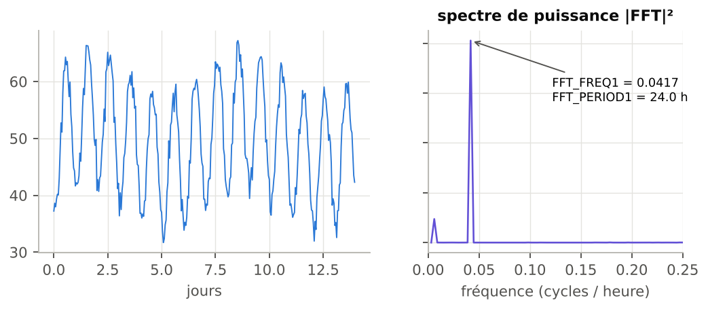
Figure 17 — Deux semaines de données horaires : le spectre montre un pic net à 0,0417 cycle/heure, soit FFT_PERIOD1 = 24,0 h.
• Avec un axe date, un cycle journalier s'affiche FFT_PERIOD1 ≈ 1,0 (jour), un cycle hebdomadaire ≈ 7,0.
• Validation croisée : 2 × OSC_PERIOD ≈ FFT_PERIOD1 confirme que le cycle est bien visible dans la courbe.
• FFT_PERIOD1 égale à toute la longueur de la plage signifie en général « pas de cycle, seulement une tendance ».
La FFT répond toujours Même sur du bruit pur, FFT_PERIOD1 renvoie une valeur (sur le bruit blanc de la figure 14 : 75). Avant de croire à un cycle, vérifiez que FFT_POWER_LF est élevé et que AUTOCORR_LAG1 est nettement positif. |
6.4 FFT_POWER_HF et FFT_POWER_LF — répartition de l'énergie
| Niveau | Formule | Unité | Signal → Série |
| Expert | FFT_POWER_HF = Σ|FFT[f > f_médiane]|² / Σ|FFT[f > 0]|² FFT_POWER_LF = 1 − FFT_POWER_HF |
sans unité, entre 0 et 1 | non |
Le spectre (hors fréquence nulle) est coupé en deux moitiés de même largeur. FFT_POWER_HF est la part d'énergie de la moitié haute, FFT_POWER_LF celle de la moitié basse ; leur somme vaut toujours 1.
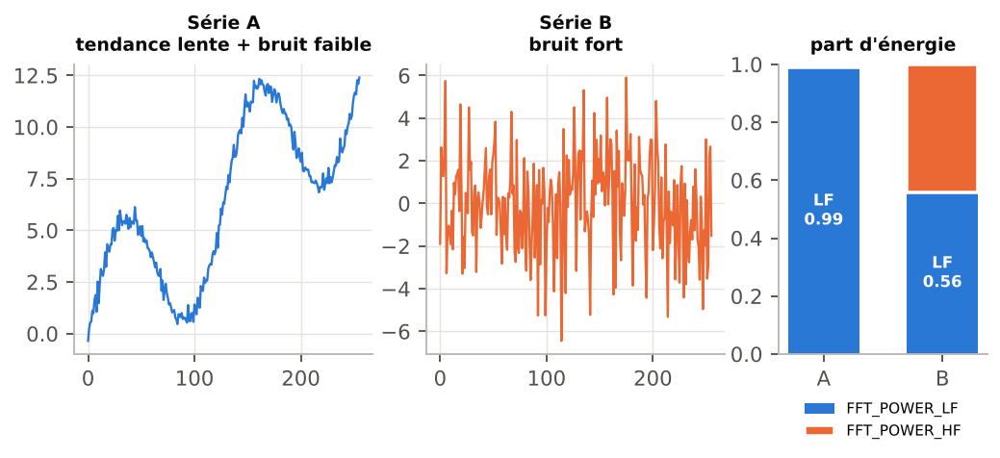
Figure 18 — Tendance lente : FFT_POWER_HF = 0,01 ; bruit fort : 0,44.
• La frontière se situe au quart de la fréquence d'échantillonnage, soit des périodes d'environ 4 pas. « HF » désigne donc des mouvements à l'échelle de quelques points : en données horaires, un cycle journalier est entièrement compté en LF.
• FFT_POWER_HF proche de 0,5 : signature d'un bruit blanc (énergie répartie uniformément).
• FFT_POWER_HF proche de 1 : alternance rapide point à point (voir l'« alternance » de la figure 14 : 0,98).
• FFT_POWER_LF proche de 1 : tendance lente ou cycles longs dominants. Sans unité, ce ratio se compare entre toutes les séries.
7. Signal → Série : transformer une métrique en courbe
Les métriques du tableau sont scalaires : un nombre par série et par plage. Le module Signals fournit aussi leurs versions vectorielles : un calcul glissant qui renvoie une valeur pour chaque point X. Le résultat est une nouvelle série, de même longueur que la source, tracée sur le graphe comme n'importe quelle autre : on peut l'utiliser dans des Metrics, une PCA, des Areas ou l'envoyer à l'IA.
7.1 Les sept conversions
| Conversion (menu) | Calcul | Fenêtre | Proposée depuis |
| Rolling mean | moyenne glissante centrée | w | toutes les métriques convertibles |
| Local variance | variance glissante centrée | w | TVAR, TVAR2, NTVAR, NTVAR2 |
| Local energy | somme glissante des résidus² après lissage court | w | HF_ENERGY |
| Derivative | dy/dx (gradient) | aucune | toutes ; ABS_SLOPE_AVG/MAX |
| Acceleration | dérivée seconde d²y/dx² | aucune | ABS_SLOPE_AVG/MAX |
| Rolling correlation | corrélation glissante avec une 2ᵉ série | w | AUTOCORR_LAG1 |
| Local fractality | longueur du chemin / écart début-fin dans la fenêtre | w | SMOOTHNESS |
La fenêtre w est celle du champ HF moving average window (Settings > Signal) : aucun paramètre supplémentaire à saisir. Les bords où la fenêtre est incomplète sont calculés sur les points disponibles ; les positions impossibles à calculer valent NaN, si bien que la série reste alignée point à point sur sa source.
7.2 Méthode rapide : clic droit sur une cellule
1. Calculez les métriques (ReCalc).
2. Faites un clic droit sur une cellule du tableau. En vue normale, la série ciblée est celle de la colonne cliquée ; en vue transposée, celle de la ligne. (Sur macOS : Ctrl + clic.)
3. Choisissez la conversion dans le menu « <série> → Series ». Pour Rolling correlation, un sous-menu demande la seconde série.
4. La nouvelle série apparaît dans la palette Séries et sur le graphe.
7.3 Méthode par lot : bouton > Serie
1. Cliquez > Serie : le bouton devient Send et un bouton Clear apparaît.
2. Faites un clic droit sur un point ● de la colonne S, sur la ligne d'une métrique : choisissez la transformation proposée pour cette métrique (elle est « armée »).
3. Cliquez les en-têtes des séries à transformer (le clic sélectionne au lieu de trier).
4. Cliquez Send : la transformation est appliquée à chaque série sélectionnée. Pour Rolling correlation, chaque série est corrélée à chacune des autres séries sélectionnées.
5. Le point de la métrique devient un ✓ vert pour la session. Clear annule la sélection en cours.
Séries de session Les séries produites sont nommées comme les séries PCA, par exemple Nucleaire_rolling_mean_w7. Ce sont des séries de session : alignées sur la plage X courante et non sauvegardées dans la query. Après un changement de filtre X, relancez la conversion. |
7.4 Exemples graphiques
Rolling mean, Local variance, Local energy
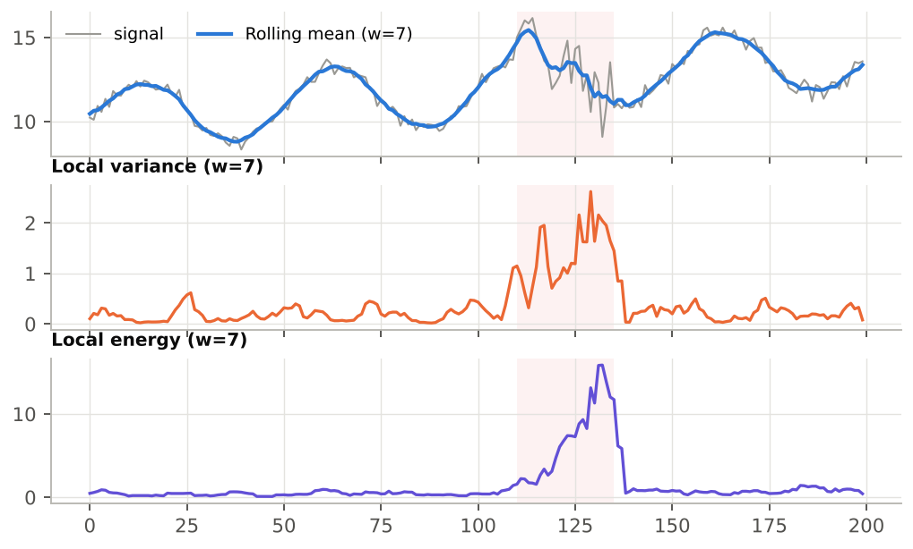
Figure 19 — Une zone bruitée (fond rosé) : la moyenne glissante la lisse, la variance locale et l'énergie locale la localisent.
Local variance et Local energy transforment une impression visuelle (« ici c'est plus agité ») en une courbe que l'on peut seuiller : par exemple une Metric Local_variance > 1 pour marquer automatiquement les périodes agitées.
Derivative et Acceleration
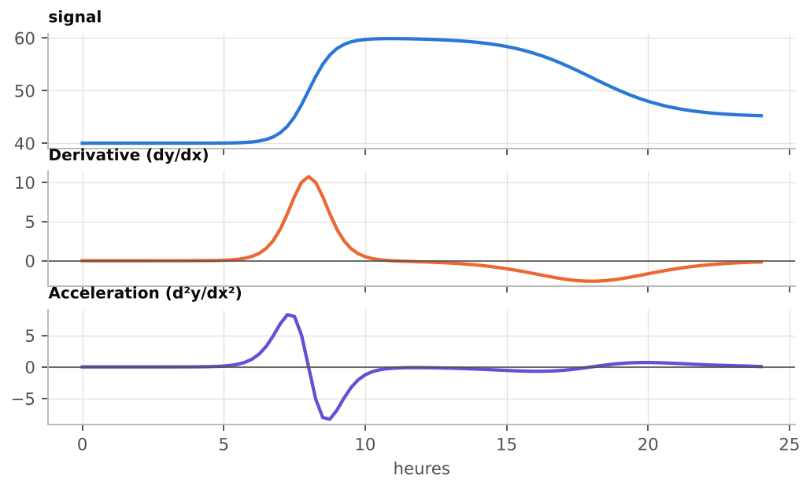
Figure 20 — La dérivée montre la vitesse de montée ; l'accélération montre où la rampe démarre (positive) et où elle freine (négative).
La dérivée est la version point par point de ABS_SLOPE_* (avec son signe). Son maximum en valeur absolue correspond à ABS_SLOPE_MAX. Appliquer ZERO_X à une série Derivative revient à compter les changements de sens.
Rolling correlation
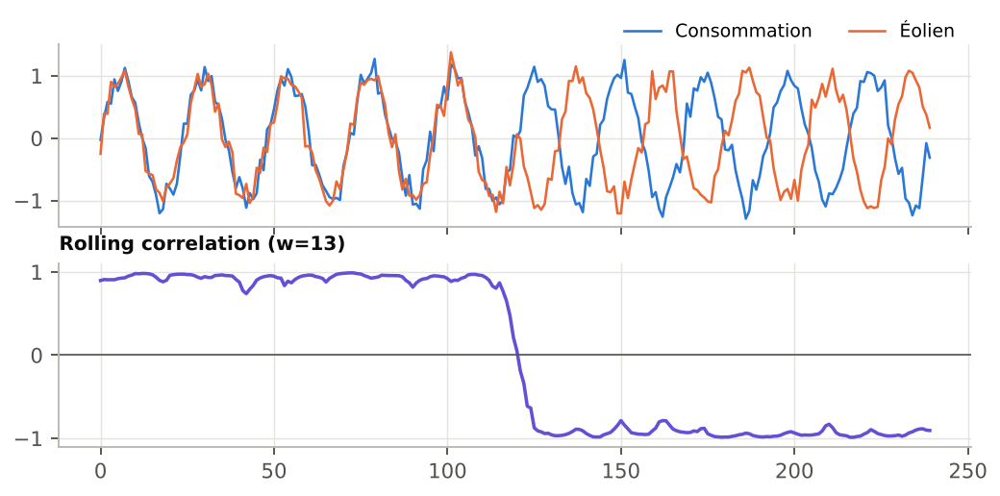
Figure 21 — Deux séries d'abord en phase puis en opposition : la corrélation glissante bascule de +1 à −1.
Idéal pour repérer le moment où la relation entre deux séries change (par exemple production et consommation, ou un prix et une température).
Local fractality
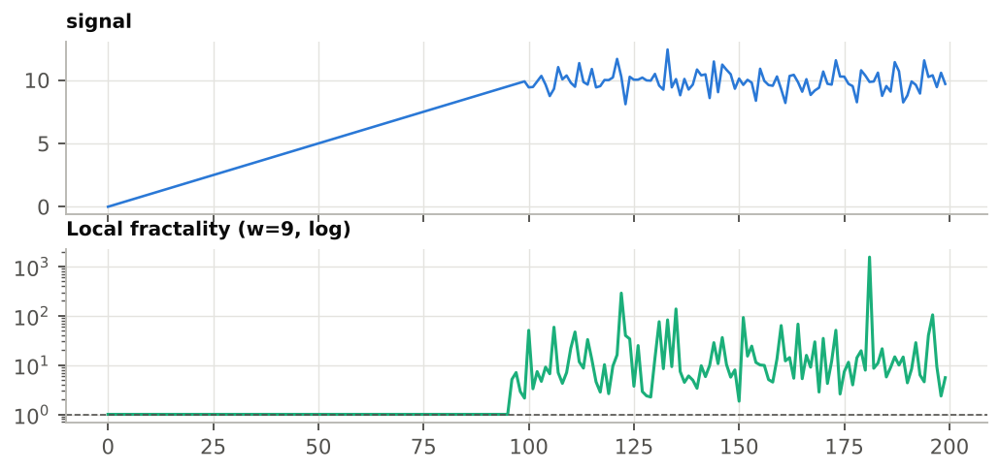
Figure 22 — Sur la portion rectiligne, la fractalité locale vaut 1 ; sur la portion bruitée elle monte à 10–100 (échelle logarithmique).
Dans chaque fenêtre, la fractalité locale divise la longueur du chemin parcouru (Σ|dy|) par l'écart entre le premier et le dernier point. Elle vaut 1 pour un segment droit et augmente avec la rugosité. Quand le début et la fin de la fenêtre ont la même valeur, le rapport est infini et remplacé par NaN pour ne pas écraser l'échelle Y.
8. Lire les métriques ensemble
Une métrique isolée trompe facilement ; trois ou quatre métriques lues ensemble dessinent un profil fiable. Le tableau suivant donne les signatures des formes de signal les plus fréquentes.
| Profil | AUTOCORR_LAG1 | SPIKE_RATIO | FFT_POWER_HF | Autres indices |
| Cycle propre | ≈ +1 | ≈ 1,2 | ≈ 0 | FFT_PERIOD1 = période ; 2 × OSC_PERIOD ≈ FFT_PERIOD1 |
| Bruit blanc | ≈ 0 | ≈ 1,5 | ≈ 0,5 | SIGN_CHG ≈ 2/3 de trans ; FFT_PERIOD1 sans signification |
| Marche aléatoire, dérive | ≈ +1 | ≈ 1,5 | ≈ 0 | FFT_PERIOD1 ≈ longueur de la plage |
| Pics isolés | ≈ 0 à faible | ≫ 2 | variable | ABS_SLOPE_MAX ≫ ABS_SLOPE_AVG |
| Rampe ou saut unique | ≈ +1 | ≫ 2 | ≈ 0 | RAMP_CONC élevé ; PEAKS faible (avec eps) |
| Alternance rapide | < 0 | ≈ 1 | ≈ 1 | SIGN_CHG ≈ trans |
Méthode de diagnostic en quatre questions
1. La plage est-elle bonne ? Vérifiez nb et l'absence de grands trous.
2. Combien ça bouge ? NTVAR (ou ABS_SLOPE_AVG si le pas est irrégulier), comparé entre périodes ou entre séries de même unité.
3. Comment ça bouge ? SPIKE_RATIO et RAMP_CONC (diffus ou concentré), AUTOCORR_LAG1 (inertiel ou erratique).
4. Y a-t-il un rythme ? FFT_PERIOD1 et OSC_PERIOD (avec eps), confirmés par FFT_POWER_LF.
Comparer des séries d'unités différentes Utilisez les métriques sans unité : SPIKE_RATIO, RAMP_CONC (à longueur égale), AUTOCORR_LAG1, FFT_POWER_HF/LF, les comptages (avec un eps adapté à chaque série) et les périodes. Évitez TVAR, NTVAR, TVAR2, HF_ENERGY, SMOOTHNESS et les pentes. |
9. Cas pratique : le nucléaire avec et sans solaire
Objectif : montrer, chiffres à l'appui, que la production nucléaire devient plus « pilotée » quand la production solaire est forte. Les données de l'exemple sont synthétiques mais reproduisent le comportement observé sur les données RTE.
9.1 Préparation
1. Ouvrez une query contenant les séries Consommation, Nucléaire et Solaire au pas horaire.
2. Cochez Nucléaire en A (cochez aussi les autres si vous voulez les comparer).
3. Ouvrez la palette Signals ; affichez au minimum NTVAR, PEAKS, SIGN_CHG, AUTOCORR_LAG1, SPIKE_RATIO, FFT_PERIOD1 et FFT_POWER_LF.
9.2 Mesure sur deux périodes
1. Avec la palette Area, encadrez une semaine d'hiver (peu de solaire). ReCalc, puis Post-it.
2. Déplacez le rectangle sur une semaine d'été ensoleillée. ReCalc.
3. Comparez le post-it et le tableau courant.
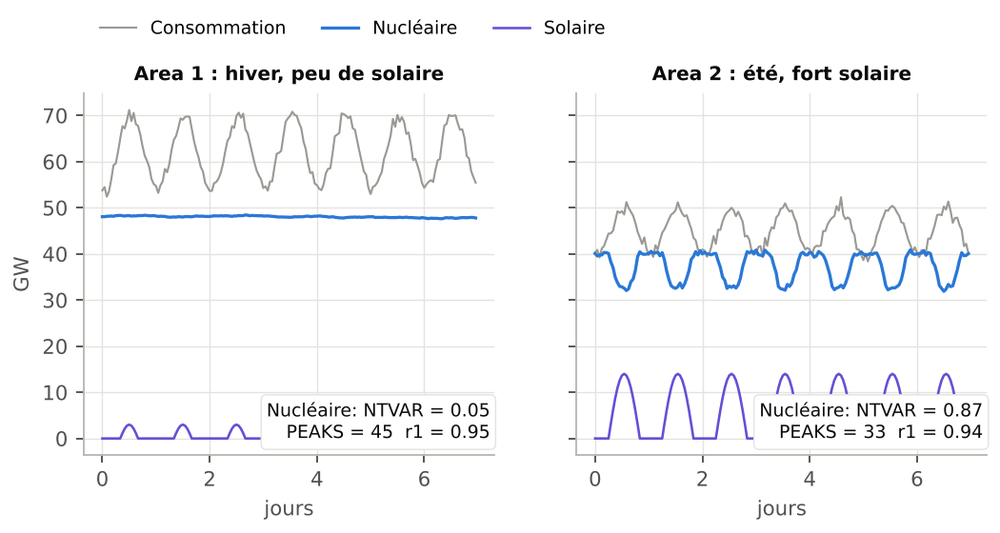
Figure 23 — Semaine d'hiver (gauche) et semaine d'été (droite) : le nucléaire (bleu) se module en miroir du solaire (violet).
| Métrique (Nucléaire) | Hiver | Été | Lecture |
| NTVAR (GW par heure) | 0,048 | 0,865 | ≈ 18 fois plus de mouvement en été |
| PEAKS (eps = 0) | 45 | 33 | trompeur : l'hiver compte surtout du bruit |
| PEAKS (eps = 0,3) | 0 | 24 | avec eps : l'hiver est plat, l'été oscille |
| SPIKE_RATIO | 1,54 | 1,68 | pas de pics isolés : modulations régulières |
| AUTOCORR_LAG1 | 0,95 | 0,94 | les deux restent inertielles |
| FFT_PERIOD1 (heures) | 168 | 24 | hiver : dérive lente ; été : cycle de 24 h |
| ABS_SLOPE_MAX (GW/h) | 0,17 | 2,98 | rampes bien plus raides en été |
9.3 Interprétation
En hiver, le nucléaire est quasi constant : NTVAR minuscule, aucune oscillation une fois le bruit filtré, et un « cycle » dominant égal à toute la semaine (168 h), c'est-à-dire une simple dérive. En été, la même série se module chaque jour : NTVAR est multiplié par près de 20, des pics et creux réguliers apparaissent, et la FFT détecte un cycle de 24 h (1,0 jour sur un axe date). Les rampes atteignent près de 3 GW par heure.
Pour aller plus loin • Convertissez Nucléaire en Local variance (clic droit) et superposez-la au Solaire : la variance monte aux heures de fort ensoleillement. • Utilisez Rolling correlation entre Nucléaire et Solaire : elle devient nettement négative en été. • Envoyez les deux tableaux à l'IA (→ AI) avec la question « Interpréter les signaux ». |
10. Exercices
Exercice 1 — Associer courbes et métriques
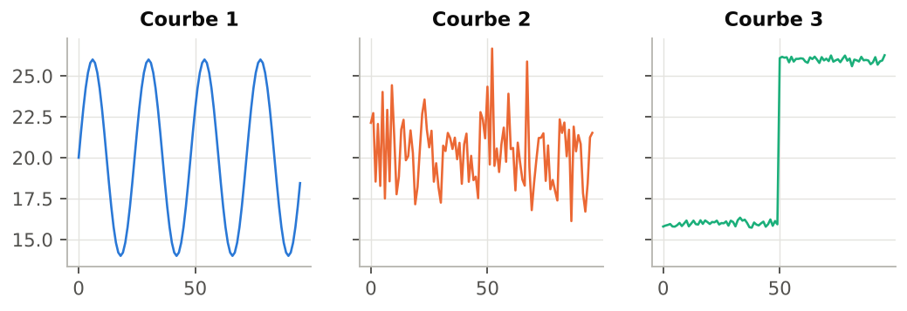
Figure 24 — Trois courbes de 96 points.
| Ligne | AUTOCORR_LAG1 | SPIKE_RATIO | RAMP_CONC | FFT_PERIOD1 | FFT_POWER_HF |
| P | 0,98 | 14,17 | 0,39 | 96,0 | 0,02 |
| Q | 0,97 | 1,23 | 0,11 | 24,0 | 0,00 |
| R | -0,03 | 1,66 | 0,13 | 2,2 | 0,50 |
Associez chaque ligne P, Q, R à la courbe 1, 2 ou 3, en justifiant avec au moins deux métriques.
Exercice 2 — Calcul à la main
Soit la série y = [2, 5, 3, 3, 8, 6] (X = 0, 1, 2, 3, 4, 5). Calculez nb, trans, TVAR, TVAR2, NTVAR, SPIKE_RATIO, RAMP_CONC, SIGN_CHG, PEAKS et VALLEYS (eps = 0). Vérifiez ensuite dans WysiQ en important ces six valeurs.
Exercice 3 — Interpréter des périodes
Sur une série de température horaire avec un axe date, la palette affiche FFT_PERIOD1 = 1,0 et OSC_PERIOD = 0,5. Que concluez-vous ? Que vaudraient ces deux métriques si l'axe X était un simple index d'heures ?
Exercice 4 — Unités
Vous comparez une production en MW et un prix en €/MWh. Parmi les métriques suivantes, lesquelles pouvez-vous comparer directement entre les deux séries ? TVAR, SPIKE_RATIO, SMOOTHNESS, AUTOCORR_LAG1, PEAKS, HF_ENERGY, FFT_POWER_LF.
Exercice 5 — Régler eps
Une série nucléaire visuellement plate affiche PEAKS = 45 sur une semaine. Expliquez pourquoi et décrivez la démarche pour obtenir un comptage qui reflète les vraies oscillations.
Exercice 6 — Atelier Signal → Série
Sur vos propres données : créez la Local variance d'une série, puis une Metric qui vaut 1 quand cette variance dépasse un seuil. Utilisez-la pour repérer les trois périodes les plus agitées, et calculez les métriques Signal sur chacune.
Corrigés
Exercice 1
• P = courbe 3 (saut unique) : SPIKE_RATIO = 14,17 et RAMP_CONC = 0,39, très élevés ; inertie forte (0,98).
• Q = courbe 1 (cycle propre) : FFT_PERIOD1 = 24,0, FFT_POWER_HF = 0,00, autocorrélation 0,97.
• R = courbe 2 (bruit) : autocorrélation ≈ 0 (-0,03), FFT_POWER_HF ≈ 0,5 (0,50) ; FFT_PERIOD1 = 2,2 n'a pas de sens physique.
Exercice 2
dy = [3, −2, 0, 5, −2] ; nb = 6 ; trans = 5 ; TVAR = 12 ; TVAR2 = 9 + 4 + 0 + 25 + 4 = 42 ; NTVAR = 2,4 ; NTVAR2 = 8,4 ; SPIKE_RATIO = 8,4 / 2,4² = 1,46 ; RAMP_CONC = √42 / 12 = 0,54. Signes non nuls : + − + − → SIGN_CHG = 3. Le palier 3 → 3 est traversé : pic en 5, creux sur le palier 3, pic en 8 → PEAKS = 2, VALLEYS = 1.
Exercice 3
Avec un axe date, l'unité de X est le jour : FFT_PERIOD1 = 1,0 signifie un cycle journalier. OSC_PERIOD = 0,5 jour est la distance moyenne pic → creux, c'est-à-dire une demi-période : le cycle est propre (2 × 0,5 = 1,0). Avec un index d'heures, on lirait FFT_PERIOD1 = 24 et OSC_PERIOD = 12.
Exercice 4
Comparables : SPIKE_RATIO, AUTOCORR_LAG1, FFT_POWER_LF (sans unité) et PEAKS (comptage, à condition de régler un eps adapté à chaque série). Non comparables : TVAR, HF_ENERGY (unité de Y ou son carré) et SMOOTHNESS (dépend de l'unité via NTVAR).
Exercice 5
Avec eps = 0, chaque micro-fluctuation de bruit crée un pic : le comptage mesure le bruit, pas le pilotage. Démarche : estimer l'amplitude du bruit point à point sur une portion calme, saisir un eps de 2 à 3 fois cette valeur, valider, puis vérifier que PEAKS correspond aux oscillations visibles. Dans le cas du chapitre 9, eps = 0,3 GW fait passer l'hiver de 45 à 0 pics.
Exercice 6
Exercice ouvert. Points de contrôle : la série Local variance porte la fenêtre dans son nom (…_rolling_var_w7) ; elle doit être recréée après un changement de plage X ; les métriques calculées sur les périodes agitées doivent montrer un NTVAR et une HF_ENERGY nettement supérieurs à ceux des périodes calmes.
11. Aide-mémoire des 22 métriques
| Métrique | Niveau | Formule | Unité / plage | Lecture rapide |
| nb | Basic | len(y) | points | points valides dans la plage |
| trans | Basic | nb − 1 | pas | dénominateur des normalisations |
| TVAR | Basic | Σ|dy| | Y | chemin vertical total |
| NTVAR | Basic | TVAR / trans | Y par pas | agitation moyenne |
| SIGN_CHG | Basic | changements de signe de dy | comptage | changements de sens (eps) |
| PEAKS | Basic | + puis − | comptage | maxima locaux (eps) |
| VALLEYS | Basic | − puis + | comptage | minima locaux (eps) |
| OSC_PERIOD | Basic | moy. distance entre extrêmes | X | demi-période d'oscillation |
| TVAR2 | Advanced | Σdy² | Y² | énergie, pèse les grands sauts |
| NTVAR2 | Advanced | TVAR2 / trans | Y² par pas | énergie moyenne par pas |
| SPIKE_RATIO | Advanced | NTVAR2 / NTVAR² | ≥ 1 | 1 = homogène ; ≫ 1 = pics |
| RAMP_CONC | Advanced | √TVAR2 / TVAR | 1/√trans … 1 | 1 = un seul événement |
| ZERO_X | Advanced | changements de signe de y | comptage | passages par 0 (eps) |
| ABS_SLOPE_AVG | Advanced | mean|dy/dx| | Y par X | vitesse moyenne |
| ABS_SLOPE_MAX | Advanced | max|dy/dx| | Y par X | rampe la plus raide |
| AUTOCORR_LAG1 | Advanced | corr(y[:-1], y[1:]) | −1 … +1 | +1 inertiel ; 0 bruit ; − alternance |
| SMOOTHNESS | Advanced | 1 / (1 + NTVAR) | 0 … 1 (dépend de Y) | 1 = lisse |
| HF_ENERGY | Expert | Σ(y − MA_w(y))² | Y² | bruit et oscillations courtes |
| FFT_FREQ1 | Expert | pic de |FFT|² | cycles par X | fréquence dominante |
| FFT_PERIOD1 | Expert | 1 / FFT_FREQ1 | X | période du cycle dominant |
| FFT_POWER_HF | Expert | part d'énergie f > médiane | 0 … 1 | 0,5 = bruit blanc |
| FFT_POWER_LF | Expert | 1 − FFT_POWER_HF | 0 … 1 | 1 = tendance ou cycle long |
Annexe — pseudo-code du moteur
x, y = points finis, filtrés sur [Xmin, Xmax]
dy = diff(y)
TVAR = sum(|dy|) ; TVAR2 = sum(dy**2)
NTVAR = TVAR / len(dy) ; NTVAR2 = TVAR2 / len(dy)
SPIKE_RATIO = NTVAR2 / NTVAR**2
RAMP_CONC = sqrt(TVAR2) / TVAR
AUTOCORR_LAG1 = corrcoef(y[:-1], y[1:])
HF_ENERGY = sum((y - moyenne_mobile(y, w))**2)
SMOOTHNESS = 1 / (1 + NTVAR)
OSC_PERIOD = mean(diff(x des extrêmes))
# FFT (n >= 8) : rééchantillonnage uniforme puis rfft
fs = (n - 1) / (x[-1] - x[0])
power = |rfft(interp(y))|**2
FFT_FREQ1 = freqs[argmax(power[1:]) + 1]
FFT_PERIOD1 = 1 / FFT_FREQ1
FFT_POWER_HF = sum(power[n_f//2:]) / sum(power[1:])
FFT_POWER_LF = 1 - FFT_POWER_HF